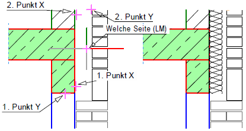
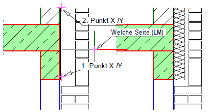

")
")
Schraffieren zwischen zwei Punkten, entlang einer Linie oder an einem Kreisbogen. Die Schraffurattribute können über die Optionen im Funktionsbereich gewählt werden. » Schraffur
|
Hinweise: |
|
·An Linien und Kreisen (Kreisbögen) können nur zweidimensionale Schraffuren angelegt werden. Zweidimensionale Schraffuren erkennen Sie daran, dass sie im Dialog Schraffur auch als Reihe angezeigt werden können. Die Option als Reihe anzeigen muss dazu aktiviert sein. ·Erzeugen Sie Dämmungen immer mit dieser Funktion und dem passenden Faktor [100 / m * d]. Zur Berechnung des richtigen Faktors benutzen Sie die Funktion Rechnen im Dialog Schraffur. |

So wird's gemacht:
§Wählen Sie unter 1.Punkt X, ob die Schraffur zwischen zwei beliebigen Punkten [Linie] oder an einem Kreis(-bogen) [Kreis] gezeichnet werden soll.
Schraffur zwischen zwei beliebigen Punkten. §Klicken Sie für die X-Koordinate eine senkrechte und für die Y-Koordinate eine waagerechte Linie für den Startpunkt der Schraffur an. [1.Punkt X]; [1.Punkt Y]. -Der Startpunkt wird durch ein Kreuz in der Zeichnung angezeigt. -Vom Startpunkt wird eine Vorschau zum Cursor gezeichnet. -Falls nach Angabe des Startpunkts am Cursor die Meldung "Schraffurtyp nicht unterstützt" erscheint, haben Sie eine nicht unterstützte Schraffur ausgewählt. Wählen Sie in der Schraffurauswahl eine zweidimensionale Schraffur. Nicht unterstützte Schraffuren sind durchgestrichen. -Alternativ können Sie den Anfangs- und Endpunkt in der Eingabeleiste angeben und bestätigen. Die Abstände werden grundsätzlich in der Eingabeeinheit Meter (m) eingegeben. Die eingestellte Eingabeeinheit können Sie der Statusleiste entnehmen und ggf. in [Option | Einste → Eingabeeinheit] ändern. §Klicken Sie die X- und dann die Y-Koordinate für den Endpunkt der Schraffur an. [2.Punkt X]; [2.Punkt Y]. Die Schraffur wird zwischen Start- und Endpunkt angezeigt. §Geben Sie die Lage der Schraffur an, indem Sie rechts oder links der Verbindung zwischen Start- und Endpunkt klicken. [Welche Seite (Mittig R. Maustaste)]. Um die Schraffur mittig auf der Linie zu verlegen, bestätigen Sie mit Rechtsklick oder klicken Sie auf . Die Schraffur wird gezeichnet. |
|
Schraffur an einem Kreis oder Kreisbogen. §Klicken Sie einen Kreis(-bogen) an. [Welcher Kreis]. Vom Kreismittelpunkt wird eine Gummibandlinie zum Cursor gezeichnet. §Wählen Sie den Startpunkt der Schraffur mit einem Linksklick. [Anfangswinkel] (bei Vollkreis); [Abstand Anfang] (bei Teilkreis). -Wenn Sie den Cursor gegen den Uhrzeigersinn bewegen, wird die Schraffur entlang der Bewegerichtung des Cursors gezeichnet. Achten Sie auch auf Fangpunkte. -Falls nach Angabe des Anfangswinkels am Cursor die Meldung "Schraffurtyp nicht unterstützt" erscheint, haben Sie eine nicht unterstützte Schraffur ausgewählt. Wählen Sie in der Schraffurauswahl eine zweidimensionale Schraffur, bevor Sie mit der Angabe des Anfangswinkels fortfahren. Nicht unterstützte Schraffuren sind durchgestrichen. -Alternativ können Sie den Anfangs- und Endpunkt in der Eingabeleiste angeben und bestätigen. Die Abstände werden grundsätzlich in der Eingabeeinheit Meter (m) eingegeben. Die eingestellte Eingabeeinheit können Sie der Statusleiste entnehmen und ggf. in [Option | Einste → Eingabeeinheit] ändern. §Wählen Sie den Endpunkt der Schraffur. [Endwinkel] (bei Vollkreis); [Abstand Ende] (bei Teilkreis). §Geben Sie die Lage der Schraffur an, indem Sie rechts oder links der Verbindung zwischen Start- und Endpunkt klicken. [Welche Seite (Mittig R. Maustaste)]. Um die Schraffur auf dem Kreis(bogen) zu verlegen, bestätigen Sie mit Rechtsklick oder klicken Sie auf . Die Schraffur wird gezeichnet. |
Beispiel:
 |
 |
Zugehörige Aufgaben:
·Schraffurbereich über Punkte definieren
·Schraffurbereich über Fenster definieren
·Schraffurbereich über Linienelemente definieren
·Schraffurbereich über Rechteck definieren
Zugehörige Referenzen: